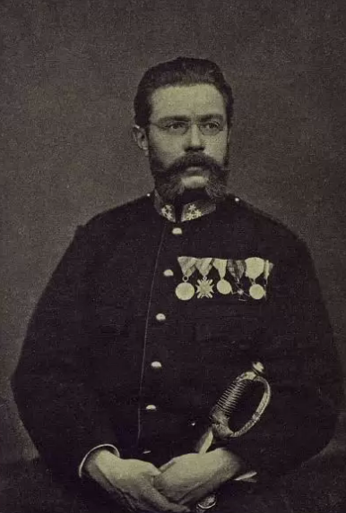

А. П. Меженинов
В селе Мишино Зарайского уезда родился Александр Павлович Меженинов (1834-1910). В 1848 году поступил в Орловский Бахтина кадетский корпус, затем в Санкт-Петербургский Дворянский полк. В 1853 году выпущен офицером в лейб-гвардии Семеновский полк. Участвовал в обороне финского побережья во время Крымской войны 1853-56 годов. В 25 лет он уже в чине полковника.
После начала сербско-турецкой войны в 1876 году он по предложению М. Г. Черняева отправился на место боевых действии и в звании офицера вступил в сербскую армию. Во время боя он был контужен. После отъезда главнокомандующего моравско-тимокской армией, назначен командиром русских добровольцев. Затем принимал участие в отправлении всех добровольцев в Россию, и сам уехал вместе с последней партией. За храбрость, проявленную в боях получил имя «Храбрейшего из храбрейших» и произведён в генералы сербской армии.